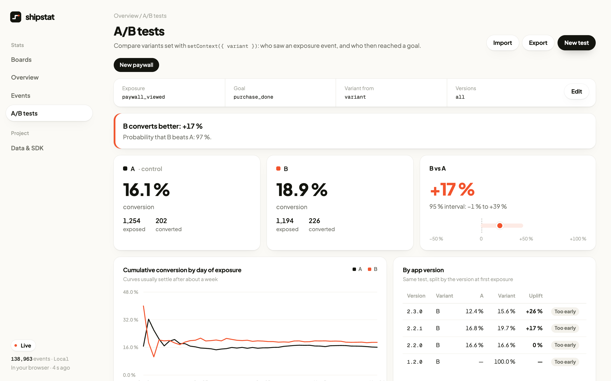
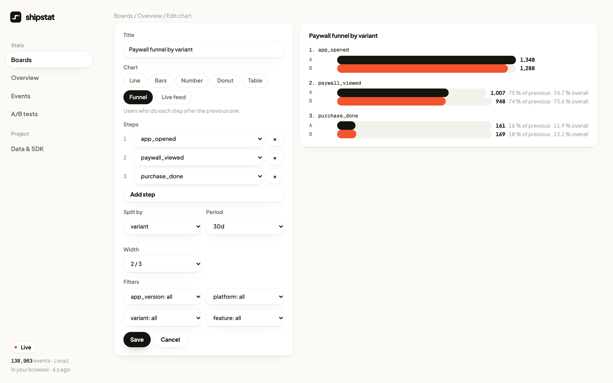

Open source · MIT · React Native & Expo
Know if what you shipped
works better.
Track the events you choose. Every event knows its app version and variant, so any number splits by release. Your data goes to your API; the dashboard runs in your browser.
A tap in the app, the event on the dashboard: real recording, iOS simulator and the local dashboard in live mode.
track() on the JS threadSetup
Running in three steps.
-
01
Install the module
A native Expo module: Swift on iOS, Kotlin on Android. Works in development builds and bare React Native.
npx expo install shipstat -
02
Track what matters
Set context once, it is added to every event. The rest is automatic.
import Shipstat from 'shipstat'; Shipstat.init({ endpoint: 'http://localhost:8787/events', }); Shipstat.setContext({ variant: 'B' }); Shipstat.track('paywall_viewed'); -
03
Open the dashboard
One command receives events, stores them in a file and serves the dashboard, live.
npx shipstat-dashboard → http://localhost:8787
In production, point endpoint at your own API. The event format is one documented JSON batch.
Examples
Three questions, a few lines each.
Does the new paywall convert better?
Set the variant, track the exposure and the goal. The dashboard gives the probability that B beats A, the uplift with its interval, and the same answer per app version.
Shipstat.setContext({ variant: user.bucket });
Shipstat.track('paywall_viewed');
// later
Shipstat.track('purchase_done', { plan: 'yearly' });
Did 2.3 change how people use the app?
Nothing to add: app version, build and OTA update ride on every event. Split any event by release, platform or your own properties.
Shipstat.track('workout_started', {
program: 'strength',
source: 'home',
});
Where do people drop?
Build the board you need: lines, bars, numbers, donuts, tables, funnels, a live feed. Each chart is a query you configure, previewed as you edit, exportable as JSON.
Shipstat.track('app_opened');
Shipstat.track('paywall_viewed');
Shipstat.track('purchase_done');
Where the data goes
Nowhere you did not choose.
Events are written to SQLite and sent in batches in the background. Offline-safe.
Any backend that accepts a JSON POST, or npx shipstat-dashboard to start.
The dashboard loads events and queries them with DuckDB. No analytics server to run or pay for.
Performance
Invisible on the JS thread.
One track() is a JSON string and a single JSI call. Ids, context, SQLite and the network run on a native background queue.
compress: true.Median of 10 000 calls timed one by one, several runs, release builds on the iOS simulator and the Android emulator. Method, raw data and recordings in the performance study.
For AI assistants
Let your AI do the integration.
Paste one prompt into Claude Code, Cursor or Codex. It installs the module, sets context at the right time, writes a tracking plan from your navigation, places each track() where the outcome is known, and verifies it live.
Also available as llms.txt and as a Claude Code skill.
# What the prompt asks for
1. Install, rebuild the native app
2. init() once, at module level
3. setContext() before the first track()
4. identify() after sign-in, setEnabled() for consent
5. A tracking plan: 10–25 events
lifecycle · activation · core actions
monetization · retention
6. snake_case object_action, flat props,
no personal data
7. Verify live with npx shipstat-dashboardQuestions
Before you install.
Does it work in Expo Go?
No. It is a native module, so it needs a development build (npx expo run:ios) or a bare React Native app.
What is collected automatically?
Only context on the events you send: app version, build, OTA update id, platform, OS version, device model, locale. No screens, no taps, no IP address, no advertising id.
What do I need in production?
An endpoint that accepts POST JSON batches and stores them, and a read route the dashboard can page through. Supabase or a few lines of Node and Postgres are enough.
How big can the data get?
The dashboard handles millions of events in the browser. Past a few tens of millions, query your store directly; the format is plain JSON.
Can users opt out?
Shipstat.setEnabled(false) deletes events waiting on the device and stops tracking until re-enabled. The choice persists.